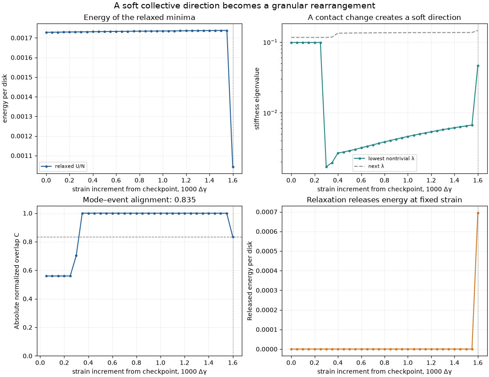
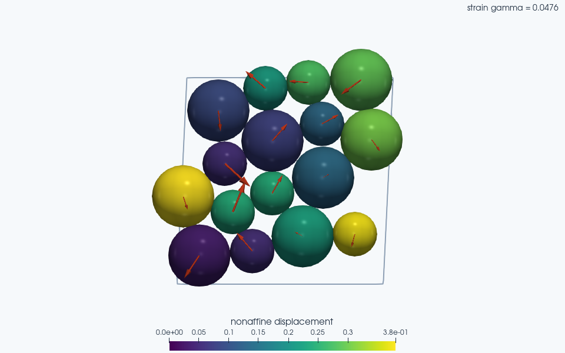

Note
Go to the end to download the full example code.
Watch a soft mode develop into a rearrangement#
A contact change can make a granular packing much easier to deform in one direction. Follow that soft direction through a short sequence of athermal quasistatic (AQS) shear steps, then compare it with a genuine energy-releasing rearrangement. The example recomputes forces, Hessians, mode shapes and displacements from JaxDEM’s contact law.
Sixteen frictionless bidisperse disks, with unit masses, occupy a
Lees–Edwards periodic cell. A small prepared configuration is included in
data/soft_mode_packing.json so the default can focus on one event rather
than searching many random packings. Only the initial positions, radii,
cell and preparation metadata are stored. Every subsequent result is
calculated here, and the starting force balance is checked afresh.
Matplotlib is required for the summary figure. All quantities use reduced units. This finite packing illustrates a local stability mechanism; its event strain and alignment are not universal material constants.
What the Hessian measures#
For overlapping disks, the spring potential is
For a contacting pair with \(\delta=R_i+R_j-r>0\) and unit separation \(\mathbf n\), its diagonal Hessian block is
The negative transverse, or prestress, contribution can soften a mode. A normalized direction \(\mathbf e\) with small positive eigenvalue costs \(\Delta U\simeq\lambda\,a^2/2\) for displacement \(a\mathbf e\). Here all disk masses are one, so the eigenvalues are \(\lambda=\omega^2\), the squared angular frequencies of small inertial oscillations. With unequal masses, diagonalize \(M^{-1/2}HM^{-1/2}\), where \(M\) repeats each disk’s mass for its two translational coordinates. A stiffness eigenvalue alone is not a frequency.
Two uniform translations have zero energy cost. Construct their columns \(T\), find an orthonormal complement \(Q\) by a complete QR factorization, and diagonalize \(Q^THQ\). This removes exactly the two translations. It does not discard arbitrary small eigenvalues or hide rattler modes. We verify that the remaining spectrum is positive.
The spring potential has a discontinuous second derivative when a contact opens or closes. Its Hessian can therefore jump. In this particular experiment a contact change creates a soft direction, followed by a later energy drop. A continuously vanishing eigenvalue at every rearrangement is not an assumption of the example.
import jax
import jax.numpy as jnp
from dataclasses import replace
import json
from pathlib import Path
import matplotlib.pyplot as plt
import numpy as np
import jaxdem as jdem
jax.config.update("jax_enable_x64", True)
# Support both standalone scripts and gallery/notebook execution.
example_dir = Path(__file__).resolve().parent if "__file__" in globals() else Path.cwd()
fixture = json.loads((example_dir / "data" / "soft_mode_packing.json").read_text())
N = len(fixture["radii"])
STRAIN_INCREMENT = 5e-5
MAX_STRAIN_STEPS = 36
FORCE_TOLERANCE = 2e-10
state = jdem.State.create(
pos=jnp.asarray(fixture["positions"]),
rad=jnp.asarray(fixture["radii"]),
mass=jnp.ones(N),
)
system = jdem.System.create(
state=state,
dt=0.01,
force_model_type="spring",
collider_type="naive",
rotation_integrator_type=None,
minimizer=jdem.minimizers.fire,
minimizer_kw={"dt": 0.05},
domain_type="leesedwards",
domain_kw={"box_size": fixture["box_size"], "gamma": fixture["gamma"]},
mat_table=jdem.MaterialTable.from_materials(
[jdem.Material.create("elastic", **fixture["material"])]
),
)
def total_energy(flat_positions, state, system):
trial = replace(state, pos_c=flat_positions.reshape(state.pos_c.shape))
return system.collider.compute_potential_energy(trial, system)[2]
energy = jax.jit(total_energy)
gradient = jax.jit(jax.grad(total_energy, argnums=0))
hessian = jax.jit(jax.hessian(total_energy, argnums=0))
translations = np.tile(np.eye(2), (N, 1))
Q = np.linalg.qr(translations, mode="complete")[0][:, 2:]
def spectrum(state, system):
H = np.asarray(hessian(state.pos_c.reshape(-1), state, system))
values, vectors = np.linalg.eigh(Q.T @ H @ Q)
return H, values, Q @ vectors[:, 0]
def contact_mask(state, system):
separation = system.domain.displacement(
state.pos[:, None, :], state.pos[None, :, :], system
)
distance = np.linalg.norm(np.asarray(separation), axis=-1)
# Exclude roundoff-sized overlaps when comparing the contact networks.
touching = distance < np.asarray(state.rad[:, None] + state.rad[None, :]) - 1e-8
return np.triu(touching, k=1)
def relax(state, system):
result = jdem.System.minimize(
state,
system,
max_steps=8_000,
force_tol=FORCE_TOLERANCE,
torque_tol=FORCE_TOLERANCE,
)
if not bool(result.converged):
raise RuntimeError(f"AQS relaxation failed: {result.info}")
assert float(result.info.force_max) <= FORCE_TOLERANCE
return result
Validate the prepared minimum and its curvature#
Initialization from a file is not evidence of equilibrium: FIRE recomputes the contact forces and relaxes to the requested tolerance. At that minimum, verify Hessian symmetry and the two translational null directions. An independent central finite difference of the energy gradient checks one Hessian–vector product, at a perturbation small enough to preserve the initial contact network.
initial = relax(state, system)
state, system = initial.state, initial.system
H, eigenvalues, mode = spectrum(state, system)
np.testing.assert_allclose(H, H.T, atol=1e-12)
np.testing.assert_allclose(H @ translations, 0.0, atol=1e-11)
assert eigenvalues[0] > 1e-7
direction = np.random.default_rng(0).normal(size=(N, 2))
direction -= direction.mean(axis=0)
direction = direction.reshape(-1) / np.linalg.norm(direction)
flat = state.pos_c.reshape(-1)
fd_step = 1e-7
finite_difference = (
gradient(flat + fd_step * direction, state, system)
- gradient(flat - fd_step * direction, state, system)
) / (2.0 * fd_step)
np.testing.assert_allclose(H @ direction, finite_difference, rtol=2e-5, atol=1e-7)
Follow equilibria and measure nonaffine motion#
One AQS increment applies affine shear, then finds a new local minimum:
domain.shear updates both particle centers and the periodic image
geometry. The nonaffine displacement is the minimum-image difference
between the relaxed and affine positions, with its mean translation
removed. Compare it with the preceding equilibrium’s normalized mode:
The absolute value removes the arbitrary sign of an eigenvector. A high overlap indicates a similar collective direction; it does not prove a universal prediction rule. FIRE iterations represent optimization, not physical time, and this example does not differentiate through FIRE. The released energy \(U_{\rm aff}-U_{\min}\) measures relaxation at fixed strain; the difference between successive minima also includes shear work. We require a large displacement and a drop between minima to identify the event displayed below.
strain_values = [float(system.domain.gamma)]
energies_per_disk = [float(initial.energy)]
released_per_disk = [0.0]
lowest_values = [eigenvalues[:2]]
overlaps = [0.0]
# Retain the accepted equilibria for VTK export without repeating the search.
# These are strain-indexed AQS states, not samples of physical-time dynamics.
scene_states = [state]
scene_systems = [system]
event = None
contact_change_softening = False
for step in range(MAX_STRAIN_STEPS):
previous_state, previous_system = state, system
previous_mode = mode
affine, strained_system = system.domain.shear(state, system, STRAIN_INCREMENT)
affine_energy = float(energy(affine.pos_c.reshape(-1), affine, strained_system))
result = relax(affine, strained_system)
state, system = result.state, result.system
displacement = np.asarray(system.domain.displacement(state.pos, affine.pos, system))
displacement = displacement - displacement.mean(axis=0)
displacement_norm = np.linalg.norm(displacement)
overlap = abs(previous_mode @ displacement.reshape(-1)) / displacement_norm
H, eigenvalues, mode = spectrum(state, system)
assert eigenvalues[0] > 1e-7, "Additional zero modes require separate analysis"
if eigenvalues[0] < lowest_values[-1][0] / 10.0:
contact_change_softening = not np.array_equal(
contact_mask(previous_state, previous_system), contact_mask(state, system)
)
energy_drop = energies_per_disk[-1] - float(result.energy)
strain_values.append(float(system.domain.gamma))
energies_per_disk.append(float(result.energy))
released_per_disk.append(affine_energy / N - float(result.energy))
lowest_values.append(eigenvalues[:2])
overlaps.append(overlap)
scene_states.append(state)
scene_systems.append(system)
if displacement_norm > 0.15 and energy_drop > 1e-4:
event = (
previous_state,
previous_system,
previous_mode,
displacement,
displacement_norm,
energy_drop,
overlap,
)
break
if event is None:
raise RuntimeError(
"No energy-releasing rearrangement in the bounded strain interval"
)
pre_state, pre_system, pre_mode, event_displacement, event_norm, drop, alignment = event
lowest_values = np.asarray(lowest_values)
assert lowest_values[0, 0] / lowest_values[:-1, 0].min() > 10.0
assert contact_change_softening, "Check the contact network at the softening step"
assert alignment > 0.6
assert np.all(np.asarray(released_per_disk) >= -1e-10)
print(f"Rearrangement strain: {strain_values[-1]:.5f}")
print(f"Energy drop per disk: {drop:.6g}")
print(f"Nonaffine displacement norm: {event_norm:.6f}")
print(f"Overlap with preceding soft mode: {alignment:.6f}")
print(
f"Lowest stiffness eigenvalue, initial/minimum: {lowest_values[0, 0]:.6g} / {lowest_values[:-1, 0].min():.6g}"
)
Rearrangement strain: 0.04760
Energy drop per disk: 0.000694514
Nonaffine displacement norm: 0.890253
Overlap with preceding soft mode: 0.834731
Lowest stiffness eigenvalue, initial/minimum: 0.0985762 / 0.00171416
Inspect the event in the sheared periodic cell#
The cell vectors are \((L_x,0)\) and \((\gamma L_y,L_y)\). Preserving the shear offset in the ParaView export represents that geometry; treating this cell as a rectangular box would misrepresent boundary contacts. Each saved equilibrium carries its current unit-normalized soft mode as arrows and its nonaffine displacement from the preceding equilibrium as particle colors. The arrows are projected above the disks for visibility. The quantitative event comparison uses the preceding mode, actual event displacement norm and normalized overlap reported above. The animation plays the saved equilibria slowly enough to follow the event. Its clock measures strain; playback introduces no intermediate simulation states and does not assign a physical time to the minimization sequence.
strain_offset = 1_000 * (np.asarray(strain_values) - strain_values[0])
fig, axes = plt.subplots(2, 2, figsize=(11, 8.5), layout="constrained")
axes[0, 0].plot(
strain_offset, energies_per_disk, "o-", ms=3, color="#275e94", label="relaxed U/N"
)
axes[0, 0].set(ylabel="energy per disk", title="Energy of the relaxed minima")
axes[0, 0].legend(fontsize=8)
axes[0, 1].semilogy(
strain_offset,
lowest_values[:, 0],
"o-",
ms=3,
color="#258685",
label="lowest nontrivial λ",
)
axes[0, 1].semilogy(
strain_offset, lowest_values[:, 1], "--", color="0.55", label="next λ"
)
axes[0, 1].set(
ylabel="stiffness eigenvalue", title="A contact change creates a soft direction"
)
axes[0, 1].legend(fontsize=8)
axes[1, 0].plot(strain_offset[1:], overlaps[1:], "o-", ms=3, color="#275e94")
axes[1, 0].axhline(alignment, color="0.5", ls="--", lw=1)
axes[1, 0].set(
ylim=(0, 1.05),
ylabel="Absolute normalized overlap C",
title=f"Mode–event alignment: {alignment:.3f}",
)
axes[1, 1].plot(strain_offset, released_per_disk, "o-", ms=3, color="#d07a28")
axes[1, 1].set(
ylabel="Released energy per disk",
title="Relaxation releases energy at fixed strain",
)
for axis in axes.flat:
axis.axvline(strain_offset[-1], color="0.45", ls=":", lw=1)
axis.set_xlabel("strain increment from checkpoint, 1000 Δγ")
axis.grid(alpha=0.2)
fig.suptitle(
"A soft collective direction becomes a granular rearrangement", fontsize=14
)
plt.show()


Colors show nonaffine displacement from the preceding saved equilibrium. Arrows show each equilibrium’s unit-norm soft eigenmode with sign aligned and a fixed display scale. In this planar scene the arrow glyphs are projected in front of the spheres; native particle positions and vector data are unchanged.
Explore this scene in 3D
Reproducing the preparation#
The JSON records the generation settings so the checkpoint is inspectable.
Start from the quasistatic shear example with
N=16, JAX random key 1, eight radii 0.5 followed by eight radii 0.7,
initial area fraction 0.65 and unit masses. Use its bounded jamming search
(energy tolerance 1e-8, band factor 4, initial fraction increment 0.04,
fraction tolerance 1e-4, at most 80 trials and 5,000 FIRE steps per trial).
The finite-system jamming fraction is approximately 0.818672. Compress by
another 0.06 in area fraction, then use Lees–Edwards boundaries and relax
at zero strain. Apply 23 increments of 0.002, minimizing after each one
with force/torque tolerance 1e-9 and FIRE dt=0.05. This produces the
stored checkpoint at \(\gamma=0.046\).
The current example uses tighter residual tolerance for the small strain increments. To study other events, regenerate the preparation and change the bounded strain interval. Contact changes, system size and preparation history can all change the mode alignment and the sequence of minima.
For background, see Maloney and Lemaître’s Amorphous Systems in Athermal, Quasistatic Shear and Manning and Liu’s Vibrational modes identify soft spots in a sheared disordered packing. These studies motivate examining collective modes and rearrangements. The contact change and alignment calculated here illustrate one finite packing rather than reproduce their statistical results.
Total running time of the script: (0 minutes 14.958 seconds)